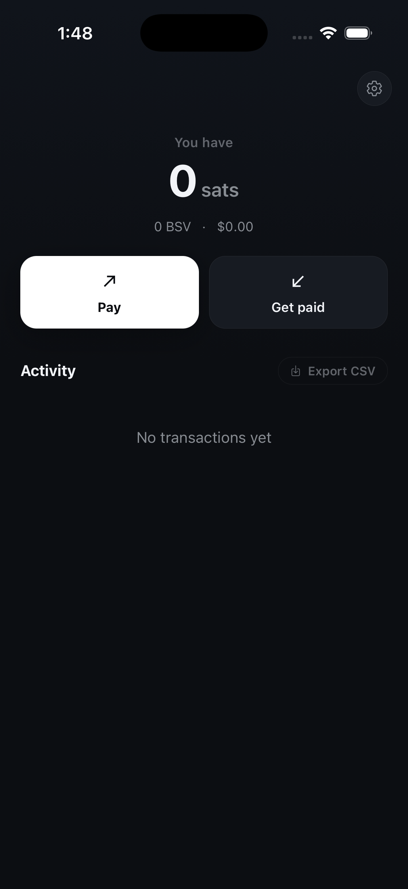
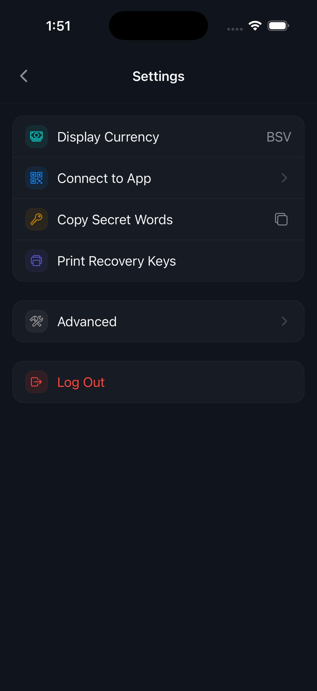
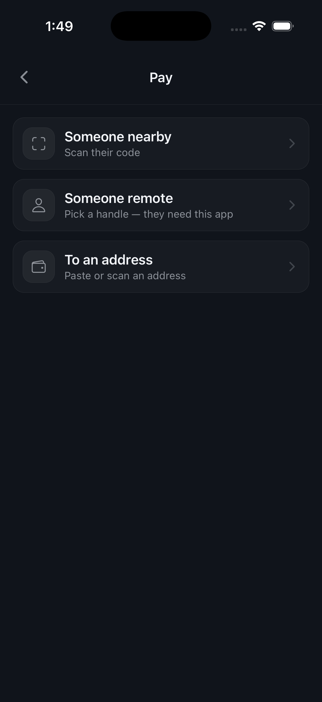
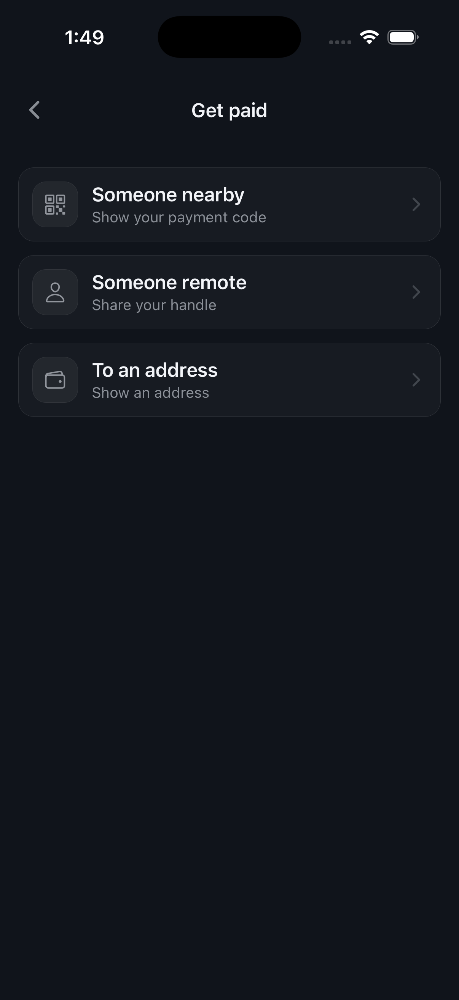
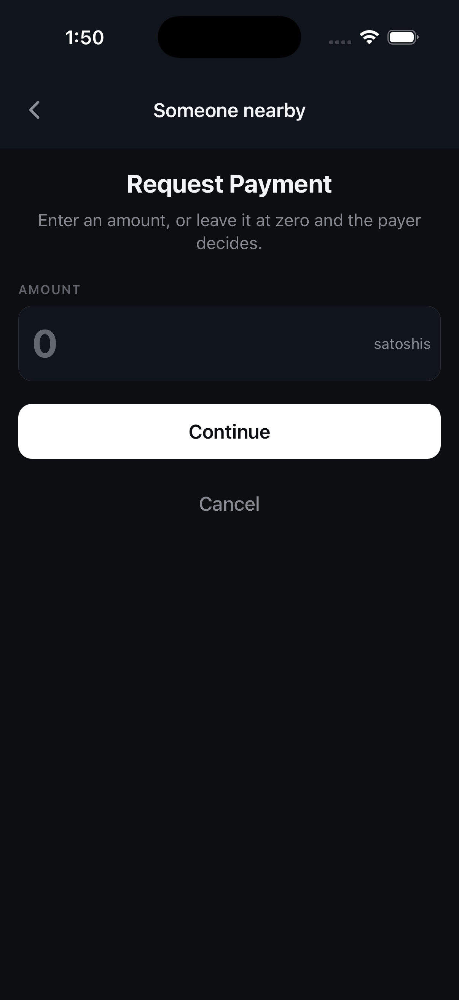
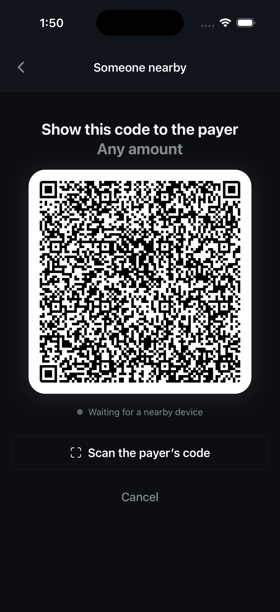
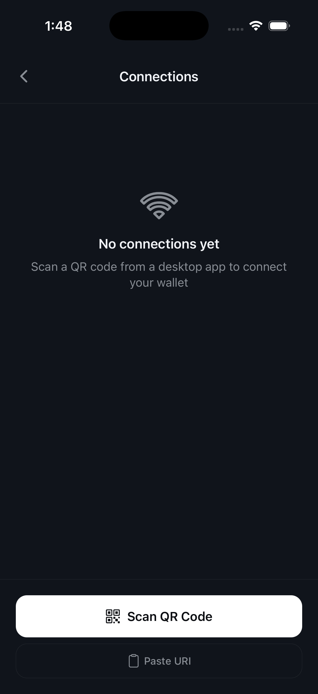
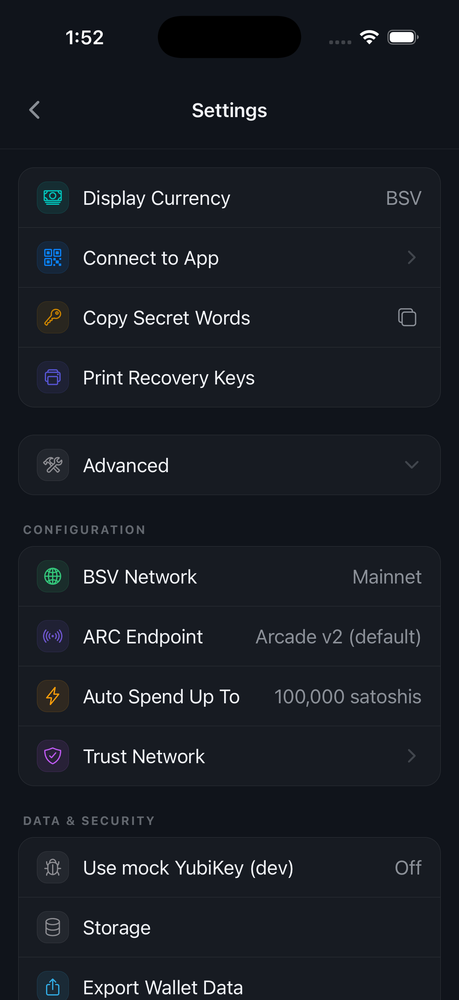

New here? Start with "Getting Started" — you will have a working wallet in about a minute. Already set up? Jump to any section below for step-by-step help.
A free, open source Bitcoin SV wallet for iOS and Android. It holds your money, sends it to whoever you like, and receives it back — with the keys living on your phone rather than on somebody else's server.
Open the wallet and you see three things: your balance, two buttons, and your recent activity. Tap Pay to send money, Get paid to receive it. Everything else — currency, backups, app connections, network settings — sits behind the gear icon in the top right.
Tap the balance itself to cycle through the ways of showing it: satoshis, whole BSV, or your display currency. Pull the activity list down to refresh it.
"Self-custodial" means exactly what it says. The twelve secret words created when you set up are the only way back into this wallet, and nobody else has them — not the BSV Association, not your phone manufacturer. That is the point, and it is also the responsibility: see Backup & Recovery before you put real money in.

Two steps: create the wallet, then write down the words that can restore it. The first takes seconds; the second is the one that matters.
On first launch the app offers two routes. Create a new wallet generates a fresh twelve-word recovery phrase on your device. Import an existing wallet takes a phrase you already have — from another BSV wallet, or from this app on an old phone.
Either way your phone asks for Face ID, Touch ID, or your device passcode. That biometric lock is what guards the stored keys from anyone holding your unlocked phone.
Importing from paper? If you have three printed recovery sheets rather than a phrase, choose the recovery-sheet route instead and scan any two of the three.
The app shows you twelve words in order. Write them on paper and put the paper somewhere only you can reach. Anyone who reads those words owns everything in the wallet, and nobody can reset them for you.
You can always see them again later: Settings → Copy Secret Words. If you would rather have paper than handwriting, Print Recovery Keys produces three sheets and any two of them rebuild the wallet — so losing one page costs you nothing.
Do not photograph the words and do not store them in a notes app or a cloud drive. Anything that syncs is something that can leak. Paper, in a place you control, is the whole idea.

Tap Pay and the wallet asks one question: who are you paying? Pick the row that matches the situation and it works out the rest.
They are standing in front of you. They open Get paid → Someone nearby and show a code; you tap Pay → Someone nearby and scan it. If they set an amount, you see it before you confirm. If they left it at zero, you enter what you want to send.
This route needs no address typed and no network lookup of who they are: the code carries everything the two phones need.
They are somewhere else and they use this app too. Choose Someone remote, pick their handle, enter an amount, and send. The payment reaches them the next time their wallet checks in, whether or not their phone is awake right now.
For everyone else: exchanges, older wallets, anything that gave you a plain BSV address. Choose To an address, then paste or scan it and enter the amount.
Check the address before you confirm. A BSV payment cannot be recalled once it is broadcast. Paste it, read the first and last few characters against the source, and only then send.

Get paid mirrors Pay exactly: the same three routes, pointing the other way.
Choose Someone nearby. The wallet asks for an amount first: type one to request a specific sum, or leave it at zero and let the payer decide. Tap Continue and your payment code appears full-screen for them to scan.
The line under the code tells you what is happening — it waits for a nearby device, then confirms when the payment lands. If it is easier for you to scan them instead, tap Scan the payer's code on the same screen.
Your handle is a name other people in this app can pay without needing an address. Choose Someone remote to see it and share it however you like — message, email, out loud.
When the sender is an exchange or a wallet that only understands plain addresses, choose To an address and the wallet shows one you can copy or let them scan.



Everything the wallet has sent or received, newest first, grouped by day.
Each row shows who the payment involved, what it was for when a description was attached, and the amount — positive for money in, negative for money out. Tap a row to open its details, including the transaction ID you can look up on any block explorer.
A payment that has been broadcast but not yet confirmed is marked as such. It is normal for this to last seconds rather than minutes; the balance updates as soon as the network accepts it.
Export CSV at the top of the activity list writes the whole history to a file you can share or open in a spreadsheet — useful for bookkeeping or tax records. The button is greyed out until there is at least one transaction to export.
The wallet can act as the signer for apps running somewhere else — on your laptop, or in a browser tab. The app asks; your phone approves.
Go to Settings → Connect to App, tap Scan QR Code, and point your phone at the pairing code the app is showing. If you have the pairing link as text instead, tap Paste URI.
Once paired, the app appears in this list. Anything it wants to do — spend, sign, reveal an identity certificate — arrives on your phone as a request you approve or refuse. Nothing happens silently.
This works with any app that speaks BRC-100, the open wallet standard, so there is no plugin to install and nothing tied to a single vendor.
Tired of approving the same small payment? Under Settings → Advanced → Auto Spend Up To you can let payments below a limit you set go through without a prompt. Set it to zero to be asked every time.

There is no password reset here. These are the ways back into your wallet if the phone is lost, and they only work if you set them up beforehand.
Twelve words, in order, created when the wallet was. Enter them into this app on a new phone — or into any other BSV wallet that accepts a standard recovery phrase — and your money comes back.
Settings → Copy Secret Words shows them again and copies them to the clipboard. Paste them straight into wherever they are going and do not leave them sitting on the clipboard longer than you need.
Settings → Print Recovery Keys produces three sheets. Any two of them rebuild the wallet; any one of them on its own is useless to a finder. Store them in three different places — a drawer at home, a relative's house, a safe deposit box.
This is the better option if your handwriting worries you, or if you want a backup that survives one location burning down.
The app can also keep an encrypted copy of its database on a server run by the BSV Association, so a new phone can restore not just your keys but your transaction history. It is encrypted with a key derived from your own secrets — the server cannot read it.
Under Settings → Advanced you can switch this off, and you can erase what has already been sent. The two are separate on purpose: switching off stops new copies, erasing removes the old ones.
A recovery phrase alone does not restore everything. It rebuilds your keys and your money, but not the record of which keys were used with whom. If you turn private backup off, keep your own export as well — see Settings below.

The gear icon on the home screen. Four everyday rows sit at the top; everything technical is folded into Advanced, which stays open once you open it.
At the bottom, in red. This erases the wallet keys from this device. Your money is not gone — it lives on the blockchain and your recovery phrase brings it back — but without that phrase there is no way in afterwards. The app asks you to confirm before it does anything.
On the BSV blockchain, like everyone else's. What your phone holds is the set of keys that can move it. If the phone breaks, the money is untouched; you restore the keys on a new phone and carry on.
Yes — by losing your recovery phrase and your printed sheets and your phone, or by sending money to the wrong address. Nobody can reverse a BSV payment or reset a lost phrase for you. Back up first, check addresses before confirming, and start with a small amount.
A handle is a name other people using this app can pay, and it stays the same. An address is a single-purpose string that any BSV wallet understands. Use a handle with people on this app, an address with exchanges and other wallets.
No. The wallet derives a fresh key for each counterparty and each payment, which keeps unrelated payments from being trivially linked to one another on the blockchain.
For a nearby payment, both phones need to be able to reach the network at the moment of payment. For a payment to your handle, the sender does not need you awake — it is waiting when your wallet next checks in.
The smallest unit of BSV: one hundred million of them make one BSV. Small amounts are easier to read in satoshis, which is why the wallet shows them by default. Switch to BSV or dollars under Display Currency.
The blockchain is public, so the transactions themselves are visible to anyone who looks. What is not public is who you are: the wallet does not ask for your name, your email, or your phone number. The optional encrypted backup is exactly that — encrypted with keys derived from your own secrets.
Testnet and mainnet are separate worlds with separate balances. Switch back to mainnet under Settings → Advanced → BSV Network and your money is where you left it.
Can't find the answer above? Reach out directly — we read every message.
Questions about your wallet, a bug you hit, or anything else — send an email and the team will get back to you.
support@bsvassociation.orgBSV Wallet is open source. File an issue on GitHub and your feedback goes straight to the developers building the next release.
Open an issue on GitHub →